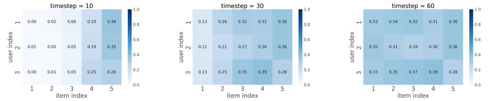
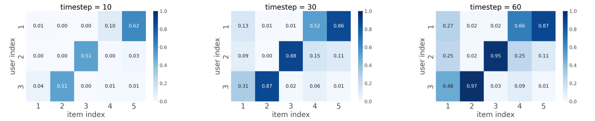
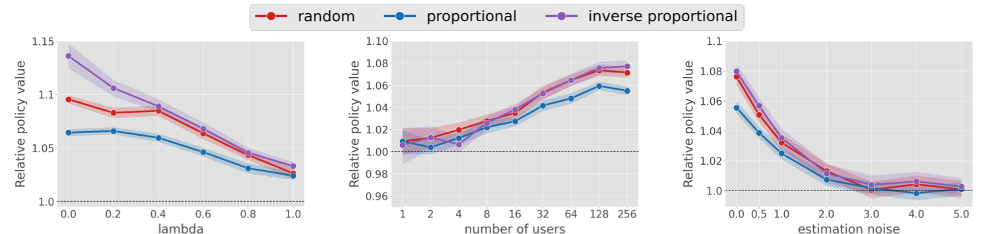
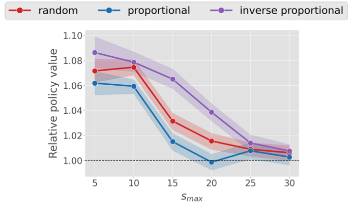
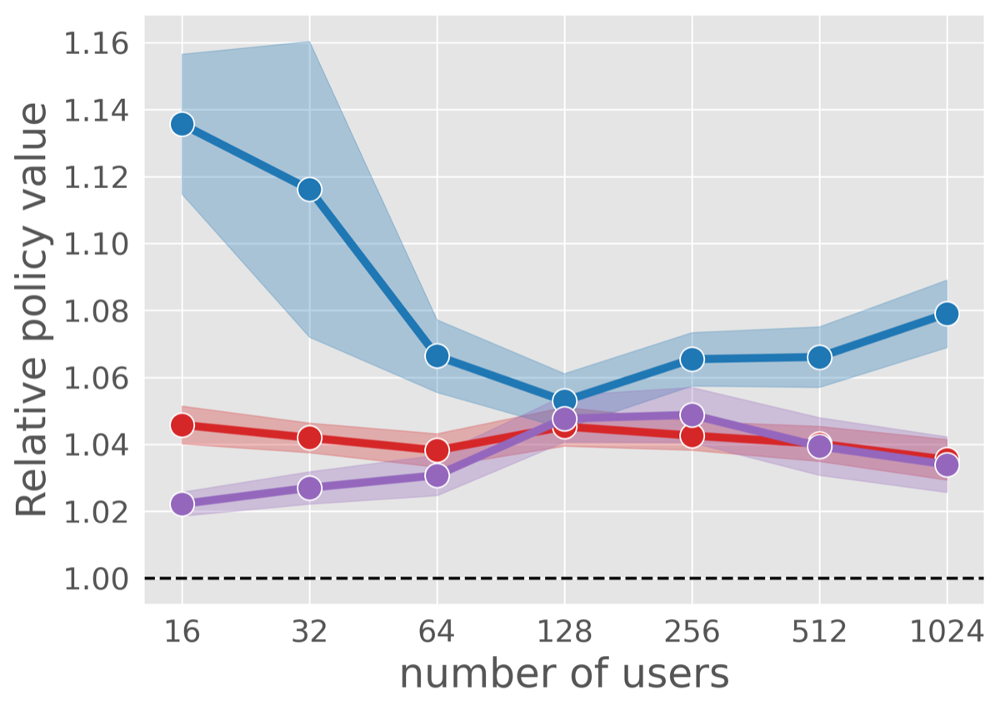
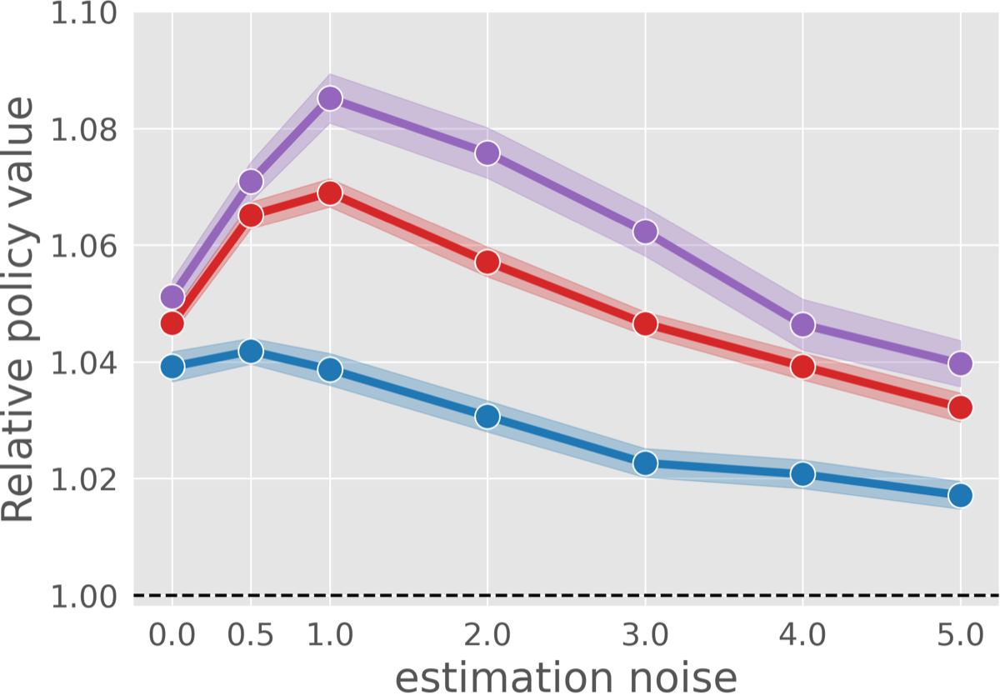

- 540 対 4203 人と 1 枚ずつの 3 種類のクーポンの例での方策価値。OPLS はどの到着順でも最適な 540 に達し、貪欲法は到着順の平均で 420（Table 1・2）。
- 平均を引くだけ期待報酬のモデル \(\hat q\) は貪欲法と同じものを使い、品目ごとの平均を引くだけなので、追加の計算はほとんどない。
- 好みがそろうほど改善が大きい合成データでは、全員の好みの順序がそろっているほど、また期待報酬の高い品目の在庫が少ないほど、貪欲法に対する改善が大きかった（Fig. 4）。
在庫に限りがあると、来た人ごとに期待報酬が最大の品目を配る貪欲法は、後から来る人に回すべき在庫を先に使い切ってしまう
推薦や広告では、利用者の特徴（文脈）を見て品目を選び、クリックや購入などの報酬を得る。これを文脈付きバンディットとして扱い、過去のログだけから方策を学ぶのがオフ方策学習（OPL）である。通常の OPL は同じ品目を何度でも選べると仮定している。しかしクーポンには配布の予算があり、商品には在庫がある。
論文は次の例を挙げる（下の表）。30%・50%・70% 引きのクーポンが 1 枚ずつあり、3 人の利用者 \(x_1, x_2, x_3\) が 1 回ずつ順に来る。どの利用者でも期待報酬は 50% 引き、70% 引き、30% 引きの順に大きいので、残りの中から期待報酬が最大のものを配る貪欲法は、来た順に 50%、70%、30% 引きを配る。合計は到着順によって 300 から 540 まで変わり、6 通りの到着順が等しい確率で起こるとすると平均は 420 になる。一方、\(x_1\) に 70% 引き、\(x_2\) に 50% 引き、\(x_3\) に 30% 引きを配れば、到着順によらず 540 になる。
| 30% 引き | 50% 引き | 70% 引き | |
|---|---|---|---|
| \(x_1\) | 80 | 250 | 200 |
| \(x_2\) | 100 | 280 | 120 |
| \(x_3\) | 60 | 100 | 70 |
| 平均 | 80 | 210 | 130 |
| 30% 引き | 50% 引き | 70% 引き | |
|---|---|---|---|
| \(x_1\) | 0 | 40 | 70 |
| \(x_2\) | 20 | 70 | −10 |
| \(x_3\) | −20 | −110 | −60 |
在庫の残り方で選べる品目が変わる逐次の推薦を、ログだけから学ぶ問題として定式化した
期間 \(T\) の間、利用者が 1 人ずつ来るたびに品目を一つ選ぶ。時点 \(t\) の在庫を、品目 \(a\) ごとの在庫数 \(s_t^a\) を並べたベクトル \(s_t\) で表す。在庫を消費したかどうかを表す二値の信号 \(c\in\{0,1\}\) も導入する。EC なら購入されたとき、クーポンなら配布したときに \(c = 1\) になる。在庫は次のように決定的に減る。
方策は文脈と現在の在庫の両方を見て \(\pi(a\mid x, s)\) で品目を選ぶ。ログは記録用の方策 \(\pi_0\) のもとで集めた \((x, a, c, r, s)\) の系列で、報酬は在庫を消費したとき（\(c = 1\)）にだけ得られるとする。方策価値は \(\sum_t c_t r_t\) の期待値で、\(c\) が二値で在庫の遷移が決定的なことから次のように書ける。
在庫の制約がない通常の OPL との違いは、方策が在庫 \(s_t\) に依存する点にある。この設定を扱う既存手法はないので、論文はまず標準的なモデルベースの手法を拡張した貪欲法を比較の基準にする。期待報酬のモデル \(\hat q\) を学び、在庫が残っている品目の集合 \(\mathcal A_{s_t} = \{a : s_t^a > 0\}\) から \(\hat q(x_t, a)\) が最大の品目を選ぶ方法である。真の \(q\) が分かれば、在庫の制約がないときはこれが最適な方策になる。
在庫が 1 個ずつで全員の好みの順序が同じなら、貪欲法と同等以上の方策が必ずあり、その差は相対的な報酬差で下から抑えられる
定理 1 利用者 \(x_1,\dots,x_J\) と品目 \(a_1,\dots,a_K\) があり、各品目の在庫は 1 個とする。すべての \(j, k\) で \(q(x_j, a_k)\ge q(x_j, a_{k+1})\)（全員が \(a_1\) を最も好む同じ順序）とする。このとき、任意の利用者 \(x_j\) と品目 \(a_k\) について次が成り立つ。
証明では、全員の好みの順序が同じなので貪欲法は誰が来ても \(a_1, a_2, \dots\) の順に配ることから、その価値を \(V(\pi_{\mathrm{greedy}}) = \sum_k \mathbb{E}_{p(x)}[q(x,a_k)]\) と求める。そのうえで、時点 1 に来たのが \(x_j\) のときだけ \(a_k\) を配り、あとは貪欲法に従う方策 \(\pi_{j,k}\) と比べる。\(k = 1\) とおくと右辺は 0 になるので、貪欲法と同等以上の方策が必ず存在する。
右辺を大きくするには、\(q(x_j, a_k) - \mathbb{E}_{p(x)}[q(x, a_k)]\)、つまりその品目の期待報酬がほかの利用者と比べてどれだけ高いかを表す量が大きい品目を選べばよい。これが提案法の出発点になる。
OPLS は期待報酬からその品目の全利用者での平均を引いた「相対的な報酬差」が最大の品目を選ぶ
Off-Policy Learning with Limited Supply（OPLS）は、在庫が残っている品目の中から、次の相対的な報酬差が最大の品目を選ぶ。和はログに含まれる \(n\) 件の文脈 \(x_i\) についてとる。
ほかの利用者と比べて期待報酬が特に高い利用者に、その品目を回すという考え方である。クーポンの例では、各クーポンの平均は 30% 引きが 80、50% 引きが 210、70% 引きが 130 になる。平均を引いた値で選ぶと、どの順に来ても最適な割当てと同じになり、方策価値は 540 になる（図1）。
必要なのは \(\hat q\) の推定だけで、貪欲法と同じモデルを使える。付録では、平均の項に重み \(\beta\in[0,1]\) をかけて、個々の利用者にとっての最適と全体での最適の間を調整する拡張も示している。論文はこれを利用者間の公平性への拡張として述べ、詳しい扱いは範囲外としている。
売り切れる品目は相対的な報酬差で、余る品目は期待報酬そのもので候補を選び、二つの候補のうち期待報酬の大きいほうを配る
実際には、品目ごとに需要と在庫の釣り合いが違う。EC では人気の品目は在庫が足りず、ロングテールの品目は在庫が余りがちである。クーポンでも、割引率の高いものは費用のために少ししか発行せず、低いものは大量に配る。そこで論文は期間の終わり \(T\) までに売り切れる品目の集合 \(\mathcal A_{\mathrm{sold}}\) と、売れ残る品目の集合 \(\mathcal A_{\mathrm{unsold}}\) に分ける。
- 売り切れる品目 在庫が残っているものの中から、相対的な報酬差 \(\hat q(x_t,a) - \frac1n\sum_i \hat q(x_i,a)\) が最大の品目を候補にする。
- 売れ残る品目 在庫が残っているものの中から、期待報酬 \(\hat q(x_t,a)\) が最大の品目を候補にする。
- 最終的な選択 二つの候補のうち、\(\hat q(x_t,a)\) が大きいほうを選ぶ。
在庫が十分にあればすべての品目が売れ残る側に入り、OPLS は貪欲法と同じ選び方になる。どの品目が売り切れるかは、方策が在庫に応じて変わるため、品目数や期間が大きいと厳密には計算できない。論文は各時点で全品目を一様に選ぶと仮定して期末の在庫を見積もる簡易な近似も示し、付録の実験でこの近似でも貪欲法を上回ったと報告している。
合成データでは真の期待報酬を使い、好みのそろい方、利用者数、推定誤差、在庫の多さを変えて貪欲法と比べた
利用者は 200 人で、文脈は標準正規分布からとった 10 次元のベクトルである。消費の確率 \(q_c(x,a)\) と報酬の平均 \(q_r(x,a)\) を、利用者ごとに違う部分 \(f\) と、全員で同じ順序になる部分 \(g\)（\(g(x,a_k)\ge g(x,a_{k+1})\)）の重み \(\lambda\) の混合で作る。\(\lambda = 0\) なら全員の好みの順序が同じになる。消費の信号 \(c\) は平均 \(q_c\) の二項分布から、報酬 \(r\) は平均 \(q_r\)・標準偏差 3.0 の正規分布からとる。記録用の方策は \(\beta\cdot q\) のソフトマックスで、\(\beta = -1.0\) とする。
初期在庫は最大値 \(s_{\max}\) を基準に 3 通りで決める。期待報酬の平均に比例させる「比例」、期待報酬の高い品目ほど在庫を少なくする「反比例」、1 から \(s_{\max}\) の一様乱数で決める「ランダム」である。特に断らない限り、品目数 \(|\mathcal A| = 100\)、\(\lambda = 0.5\)、\(s_{\max} = 20\) で、100 シードで実験する。在庫の多さを変える実験（図5）以外は、期間 \(T\) を十分長くとり、すべての品目が売り切れるようにしている。
比較相手は貪欲法だけで、評価には相対的な方策価値 \(V(\pi_{\mathrm{OPLS}})/V(\pi_{\mathrm{greedy}})\) を使う。推定誤差を変える実験以外では、両手法とも真の期待報酬を使う。在庫の制約がなければ、真の期待報酬を使う貪欲法は最適な方策になる。論文はこの条件で比べる理由として、OPLS がその貪欲法をさらに改善できることを示すためと、在庫の制約が性能を大きく左右する状況を見きわめるためを挙げている。
このページの数値と図は arXiv v4（2026 年 5 月 17 日、ACM の書式で WWW 2026 の DOI を記載）による。ACM の出版版（DOI 10.1145/3774904.3792181）の本文は自動取得できなかったため、照合していない。
小さな例では、貪欲法は最後には全員にほぼ均等に配り、OPLS は品目ごとに特定の利用者へ集中して配った
利用者 3 人、品目 5 個、初期在庫はランダム、\(\lambda = 0\) の小さな実験である。論文の Table 3 の期待報酬では、全員にとって番号の大きい品目ほど期待報酬が高い。貪欲法は、はじめは期待報酬の高い品目から配るので、序盤の方策価値は OPLS より高い。しかし最後にはどの品目も 3 人にほぼ均等に配る（図2）。OPLS は品目ごとに特定の利用者へ集中して配り、論文によれば \(a_5\) の約 80% を \(x_1\) に配った（図3）。最終的な方策価値は OPLS が貪欲法を上回った（論文 Fig. 1）。
Table 3 の値から品目ごとの平均を引くと（解説者の計算）、相対的な報酬差が最大になる品目は \(x_1\) では \(a_5\)、\(x_2\) では \(a_3\)、\(x_3\) では \(a_2\) で、図3 で濃く塗られたマスと一致する。


好みがそろうほど、利用者が多いほど OPLS の改善は大きく、推定誤差が大きいと改善は小さくなり、在庫が十分なら貪欲法と同等になった
好みのそろい方 どの \(\lambda\) でも OPLS が貪欲法を上回り、\(\lambda\) が小さい（好みがそろっている）ほど改善が大きかった（図4 左）。全員が同じ品目を好むと、貪欲法はその品目を全員に均等に配ってしまう。OPLS は、その品目で期待報酬が特に高い利用者に選んで配る。初期在庫の決め方の中では反比例のときに改善が大きく、論文は、期待報酬の高い品目が少ないときほど、その少ない品目を効果的に配る必要があると説明している。
利用者数 品目数を 100 に固定して利用者を増やすと、相対的な方策価値は次第に大きくなった（図4 中央）。利用者が増えるほど期待報酬の高い品目が相対的に不足するためである。
推定誤差 両手法に \(\hat q = q + \mathcal N(0,\sigma)\) を使うと、誤差が大きくなるにつれて改善は小さくなった（図4 右）。論文は期待報酬がある程度正確に推定できれば大きな改善が得られると述べている。
在庫の多さ \(s_{\max}\) を 5 から 30 まで増やすと、売れ残る品目の割合はおよそ 0%、5%、30%、40%、50% と変わった（図5）。改善は \(s_{\max}\) が小さいときに大きく、在庫が十分なときは貪欲法と同等の性能だった。付録の記述から、この実験は売り切れる品目と余る品目を分ける拡張版によるものと読める（解説者の解釈）。


KuaiRec に人工の在庫を割り当てた実験でも、ニューラルネットで推定した期待報酬を使った OPLS が貪欲法を上回った
KuaiRec は動画共有アプリ Kuaishou の推薦ログで、1,411 人と 3,327 本の動画からなる部分集合では、利用者と動画の組のほぼ 100% で反応が観測されている。論文はそこから 1,000 人と 1,000 本をとり、観測された反応を報酬の平均 \(q_r\) とし、消費の確率は \(q_c = 1\) とした。利用者の特徴量は PCA で次元を減らして文脈にする。在庫の情報はないので、合成データと同じ方法で人工の在庫を割り当てる。記録用の方策は \(\beta = 1.0\) のソフトマックスで、期待報酬は 3 層のニューラルネットでログから推定する。
品目数を 1,000 に固定して利用者数を変えると、どの利用者数でも OPLS が貪欲法を上回った（図6 左）。人工的に誤差を加えた期待報酬を使うと、どの誤差の大きさでも OPLS が上回り、誤差が小さい範囲では誤差とともに相対的な方策価値が大きくなった（図6 右）。論文はこれを、OPLS が貪欲法より推定誤差に頑健でありうることを示すものとしている。
論文は、この設定は研究のためのシミュレーションだと断っている。そのうえで、人気動画の露出しすぎを抑える、カテゴリの多様性を保つ、新しい動画に最初の露出を保証する、といった露出の制約は実際の動画推薦にも関わりうると述べている。


制約は総予算ではなく品目ごとの在庫で、選ぶ基準は処置効果ではなく期待報酬だが、品目ごとの基準値を引いて選ぶ形は予算配分の規則に近い
- 推定するもの 品目ごとの期待報酬 \(q(x,a) = \mathbb{E}[c\cdot r\mid x,a]\)。対照（何も配らない場合）との差である処置効果は扱わない。
- コストの扱い 品目ごとの費用は扱わない。制約は品目ごとの在庫数で、消費の信号が \(c = 1\) のときだけ在庫が減る。
- 処置の種類 多値（品目や割引率の違うクーポン）。各時点で一つを選ぶ。
- 予算制約 品目ごとの在庫の上限。在庫が尽きた品目は選べなくなる。品目全体にかかる総予算の制約は、論文が今後の課題に挙げている。
- データ 記録用の方策で集めたログから \(\hat q\) を学ぶ。方策は \(\hat q\) から直接決まり、傾向スコアによる重みづけは使わない。実験は合成データと、KuaiRec に人工の在庫を割り当てた半合成データ。
線形計画との関係を補足しておく（解説者の注）。割当てを確率的にしてよいとして、各品目の在庫の制約のもとで期待報酬の和を最大にする線形計画を考える。この問題をラグランジュ緩和すると、各品目の在庫制約の双対変数を \(\mu_a\ge 0\) として、文脈ごとに \(\arg\max_a\,(q(x,a) - \mu_a\, q_c(x,a))\) を選ぶ規則が得られる。消費の確率 \(q_c\) が 1 なら（KuaiRec の実験など）、これは \(q(x,a) - \mu_a\) が最大の品目を選ぶことになる。在庫が余る品目では \(\mu_a = 0\) になる。OPLS は \(\mu_a\) の代わりに全利用者での平均 \(\frac1n\sum_i \hat q(x_i,a)\) を引いており、拡張版で売れ残る品目は平均を引かずに選ぶ点も \(\mu_a = 0\) に対応する。総予算の制約で同じ緩和をすると、品目ごとの基準値が「価格 \(\lambda\) × 費用」に置き換わる。予算制約つきの割当てで使う「効果 − \(\lambda\) × 費用」の規則は、これと同じ形をしている。論文自身はこの双対変数との対応には触れていない。
@inproceedings{tanaka2026offpolicy,
title = {Off-Policy Learning with Limited Supply},
author = {Tanaka, Koichi and Kishimoto, Ren and Kawagishi, Bushun and Narita, Yusuke and Yamamoto, Yasuo and Shimizu, Nobuyuki and Saito, Yuta},
booktitle = {Proceedings of the ACM Web Conference 2026},
pages = {5908--5919},
year = {2026},
publisher = {ACM},
doi = {10.1145/3774904.3792181}
}